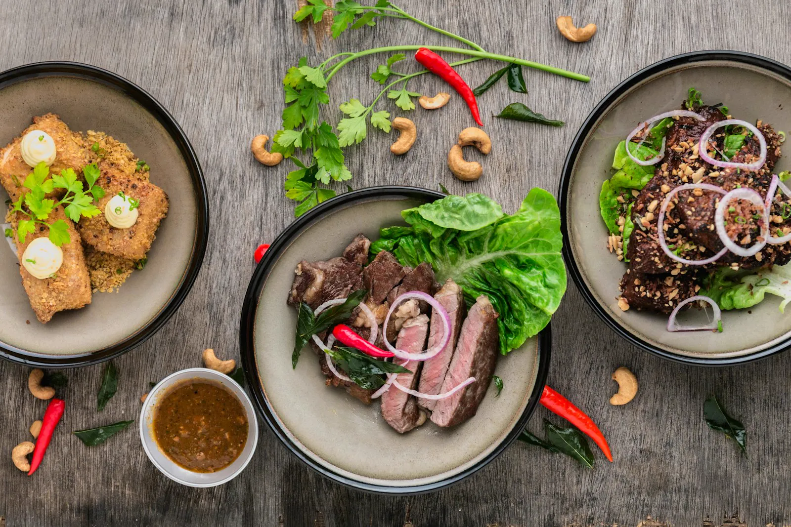
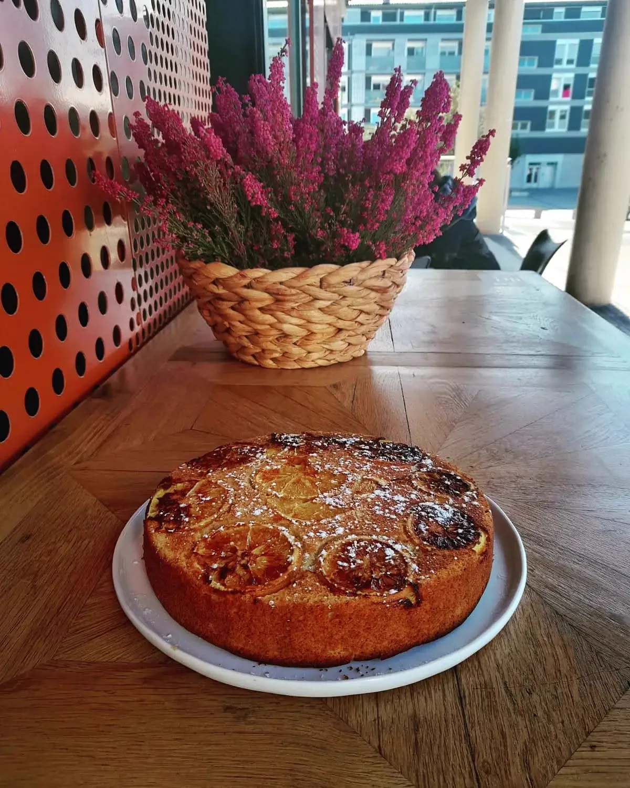
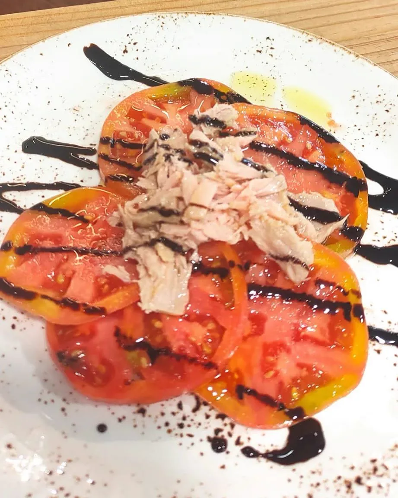
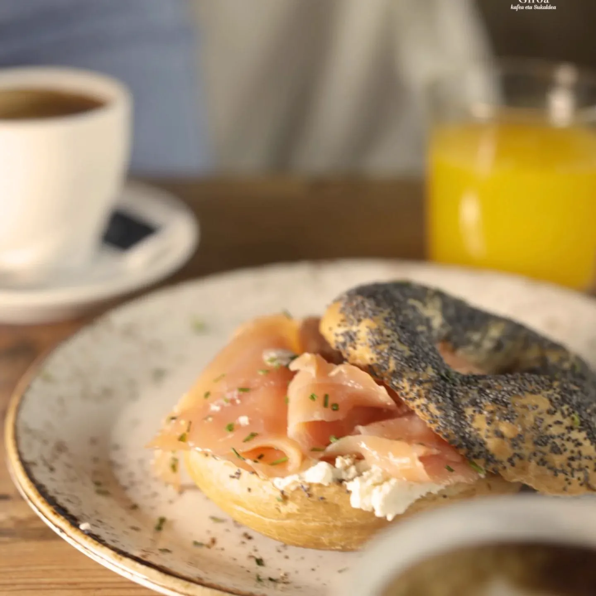
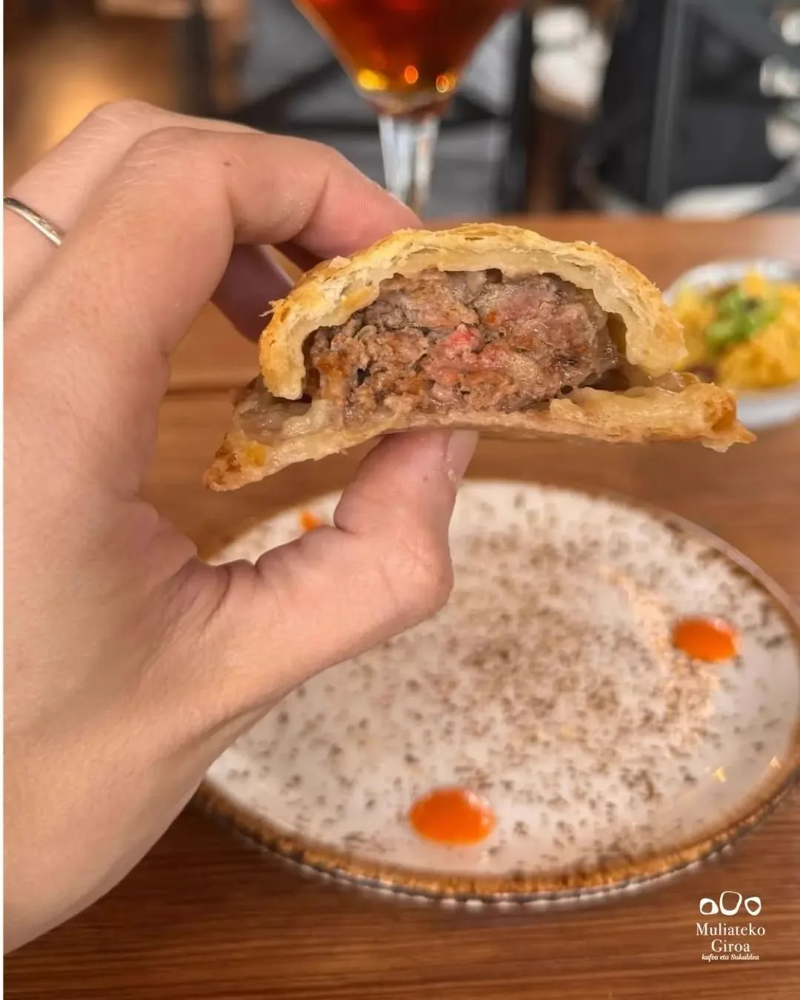
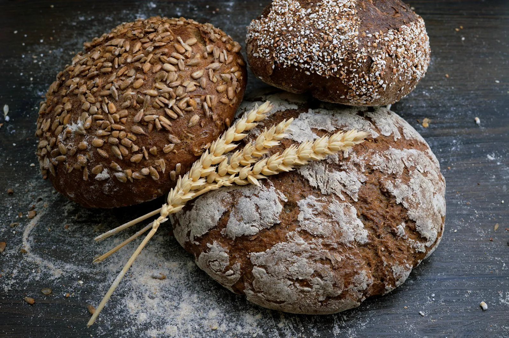

Un nuevo concepto en el barrio de Muliate
Muliateko Giroa es un nuevo concepto de restaurante-cafetería, panadería pastelería y tienda delicatessen, con diferentes servicios gastronómicos. Verdura, hortalizas y legumbres de las huertas de Hondarribia.

El sabor de la huerta de Hondarribia
Trabajamos con verdura, hortalizas y legumbres de las huertas de Hondarribia. Producto de temporada, de cercanía, que llega cada día a nuestra cocina y a nuestra tienda delicatessen.
Cuidar. Eso es lo que hacemos: desde la materia prima hasta el plato que llega a tu mesa.

Pan, bollería y postres de elaboración propia
Panes de elaboración propia para nuestras tostadas, bollería recién horneada cada mañana y una repostería casera que conquista: bizcochos esponjosos, napolitanas y nuestra famosa tarta de queso.
Como contaron en EITB, el secreto de una buena tostada está en el detalle: el pan, el punto y el producto.
Nos visitó «A Bocados» de EITB
«Las claves para una buena tostada en el bar y cafetería Muliateko Giroa, en Hondarribia». Mira el reportaje completo en EITB.

Ver en EITB · 4:18Un entorno tranquilo, con terraza







Ven a conocernos
Te esperamos en Plaza Muliate
Desayunos, brunch, comidas y meriendas. Abrimos todos los días.